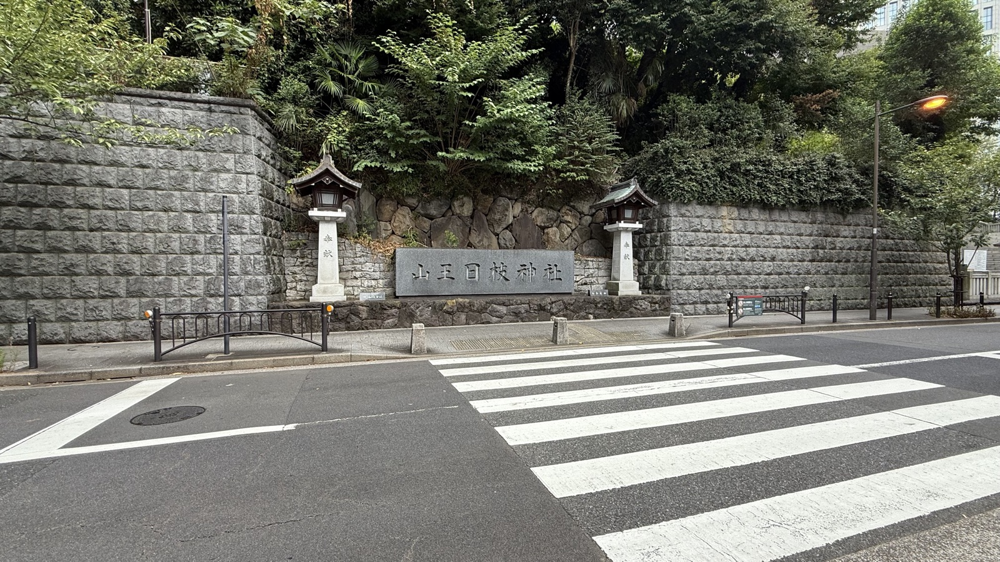
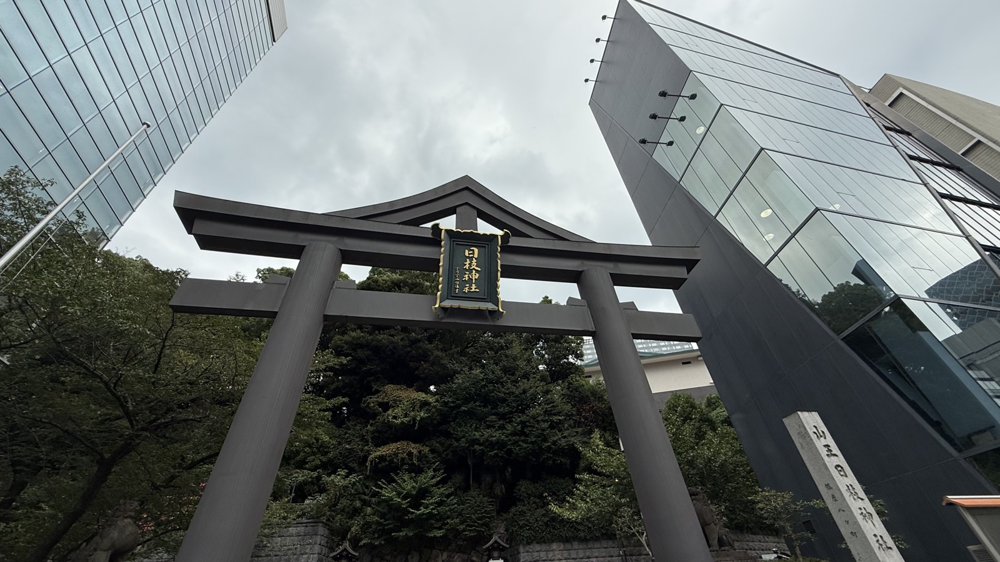
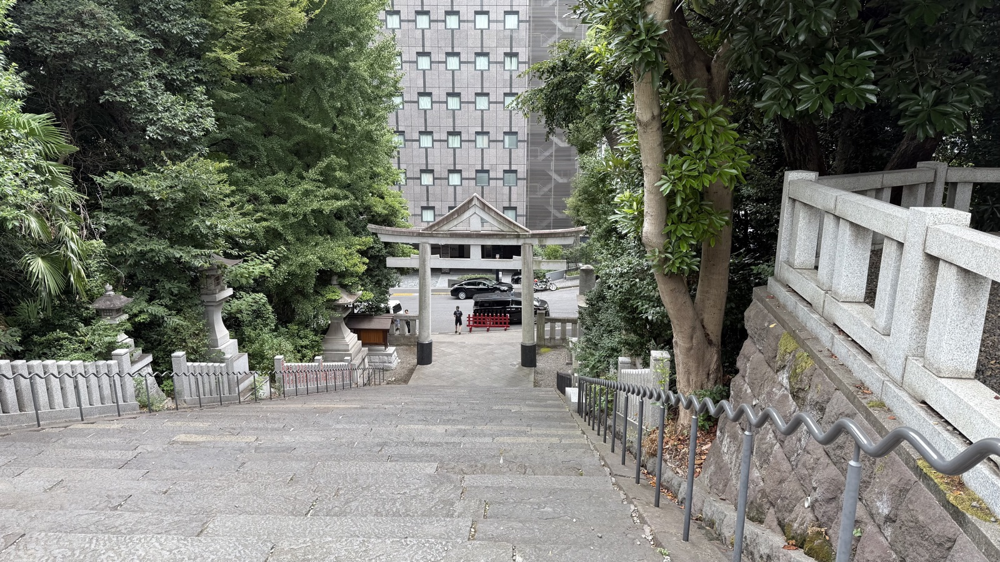
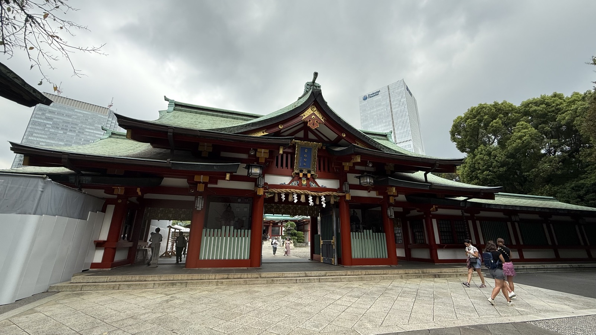
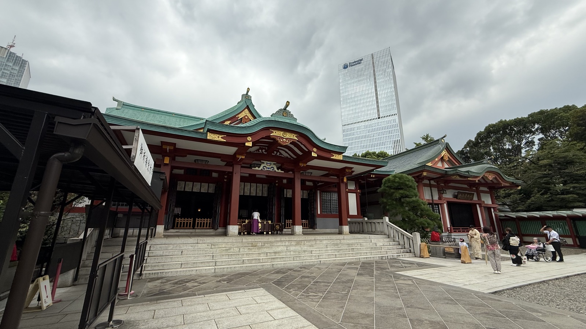
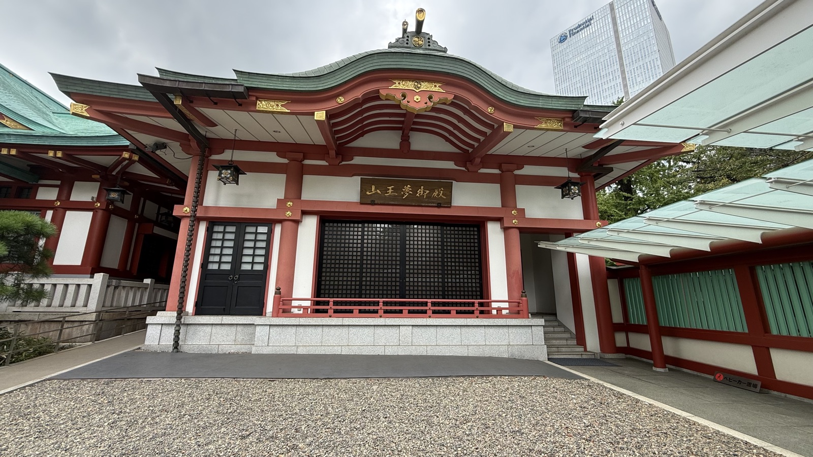
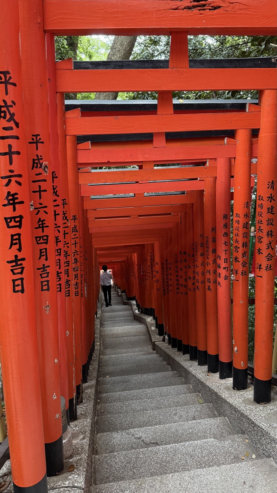
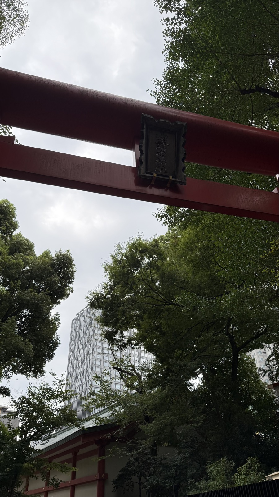
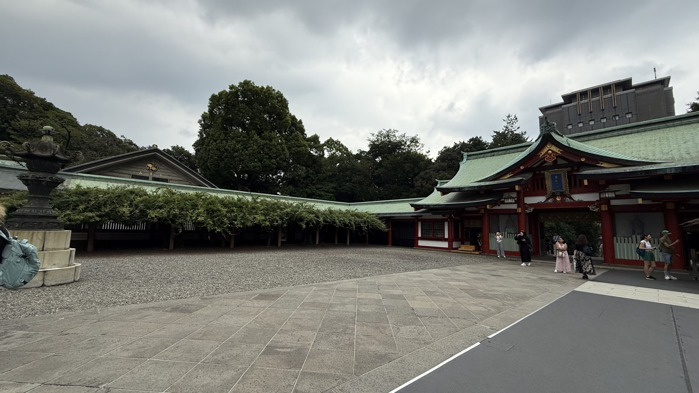
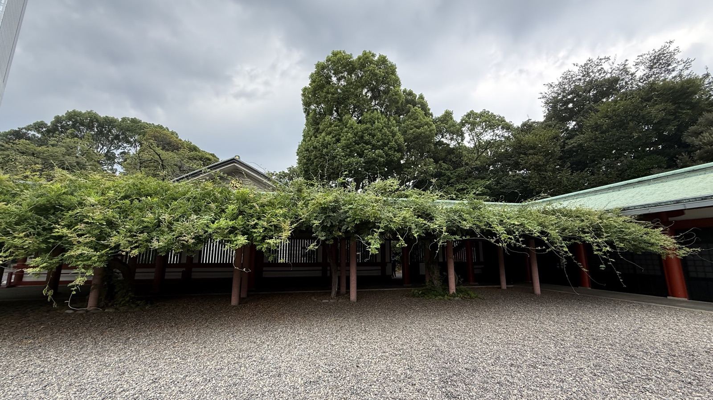

祭神大山咋神
ご利益仕事運・厄除・安産Career, warding off misfortune, safe childbirth
創建太田道灌の勧請（15世紀）とされる
最寄駅地下鉄赤坂・溜池山王
History
由緒・創建
江戸城（現在の皇居）の鎮守。太田道灌が川越から勧請したのが始まりとされ、徳川将軍家の氏神となった。勅祭社・旧官幣大社。

通り沿いに立つ「山王日枝神社」の石碑と石灯籠。


山王男坂。石段の脇にエスカレーターが設置されている。

Highlights
見どころ
山王鳥居（上部が三角形をした、山王信仰独特の形）／社殿へはエスカレーターで上がれる／神使は猿（「まさる」＝魔が去るに通じるとされる）／稲荷参道の朱の鳥居列。



「山王夢御殿」と扁額に記された社殿。すぐ背後まで高層ビルが迫る。

山王稲荷神社へ続く朱の鳥居のトンネル。



回廊を覆う藤棚。花期を過ぎても青々とした葉が回廊全体を包む。
Background
文化的背景
総本社は滋賀の日吉大社で、比叡山の守護神とされる。神仏習合の代表例（→記事「日本と神社」）。山王祭は天下三大祭のひとつとされる。